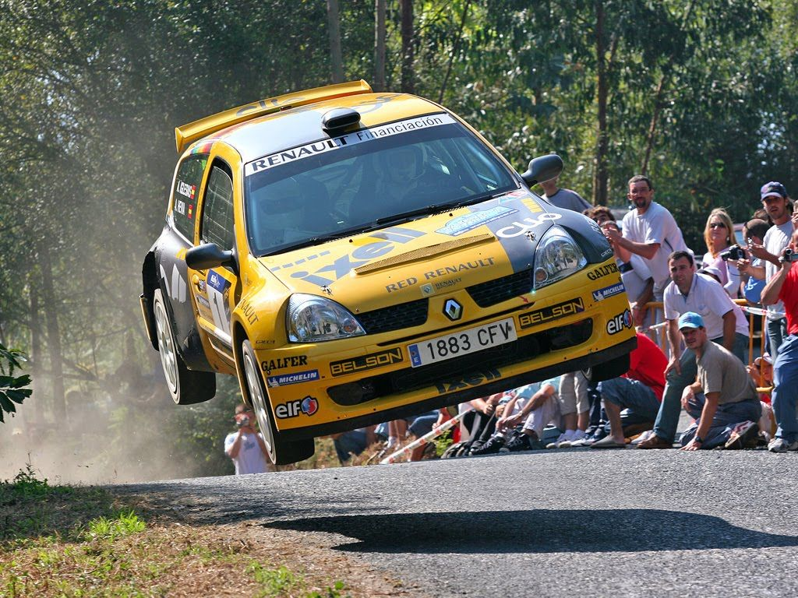

Un rally es una competición automovilística que se disputa en carreteras abiertas al tráfico pero que se cierran especialmente para su celebración. A la parte cerrada al tránsito rodado se le denomina «tramo», que es el lugar donde cada participante compite y que debe completar en el menor tiempo posible. El ganador es aquel que, con la suma de los tiempos de todos los tramos, haya empleado menos para completar la carrera.
Este deporte es una disciplina automovilística con una reglamentación propia y tiene cuatro grandes diferencias respecto a las carreras en circuitos. En primer lugar, se disputan en vías públicas convenientemente cerradas al tránsito rodado; en segundo lugar, el tipo de vehículos utilizados deben ser aptos para circular por carreteras públicas por lo que deben estar matriculados y dotados de los mismos elementos obligatorios que el resto de coches como los faros, la rueda de repuesto o los intermitentes. La tercera peculiaridad es que a diferencia de los circuitos, los equipos que compiten en rally están dotados de dos personas: un piloto y un copiloto, cada uno con una función distinta.
La cuarta y última característica es que mientras en circuitos, todos los participantes toman la salida a la vez, en rally lo hacen de uno a uno con un tiempo de un minuto entre ellos por lo que cada piloto compite en solitario y rara vez se topa con un contrincante durante la carrera, salvo que este se haya accidentado o se haya parado por una avería. Todos estos aspectos están fijados en una normativa que la Federación Internacional del Automóvil, el ente máximo del deporte motor, establece.
Esta normativa es genérica para todos los países, pero en cada uno ellos las respectivas federaciones locales pueden variar las normas a su criterio. Por ello se puede establecer un patrón común pero las características y funcionamiento de un rally varían si se trata de una prueba del Campeonato Mundial de Rally, una prueba internacional o una nacional o regional. Además, el formato de los rally ha variado mucho a lo largo de los años. En el pasado se disputaban por carreteras abiertas, con salidas desde diferentes puntos y con una ciudad como meta,el kilometraje era mucho mayor y los vehículos eran prácticamente idénticos a los de serie.
En rally se compite con automóviles de turismo debidamente modificados para su adaptación a la competición aunque es frecuente ver motos y camiones en su principal variante los raids y al igual que otras competiciones automovilísticas, es un deporte mixto, donde hombres y mujeres compiten en igualdad de condiciones.
